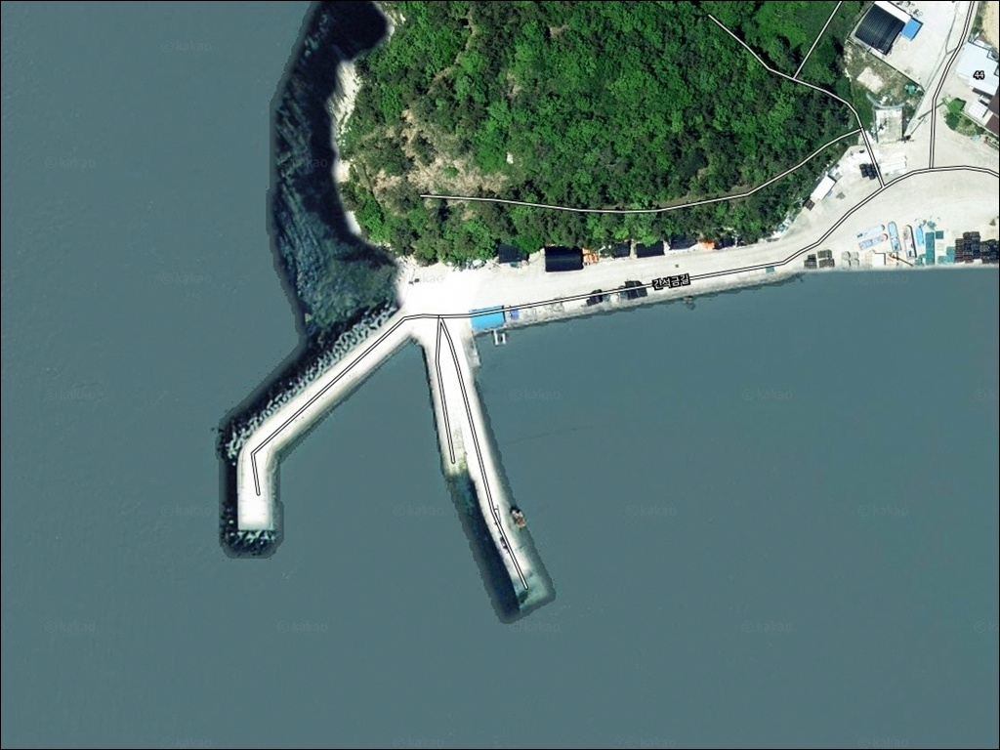
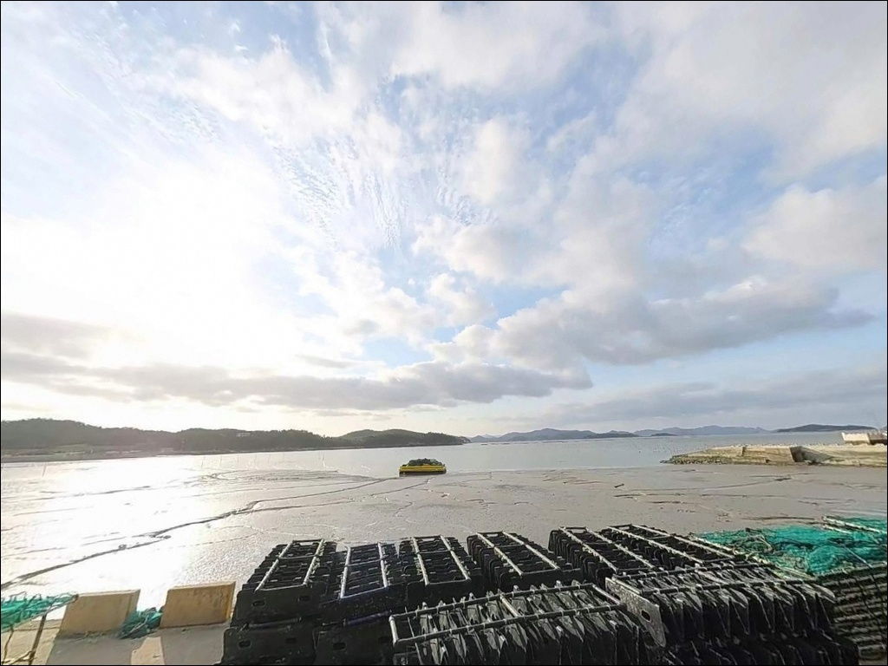
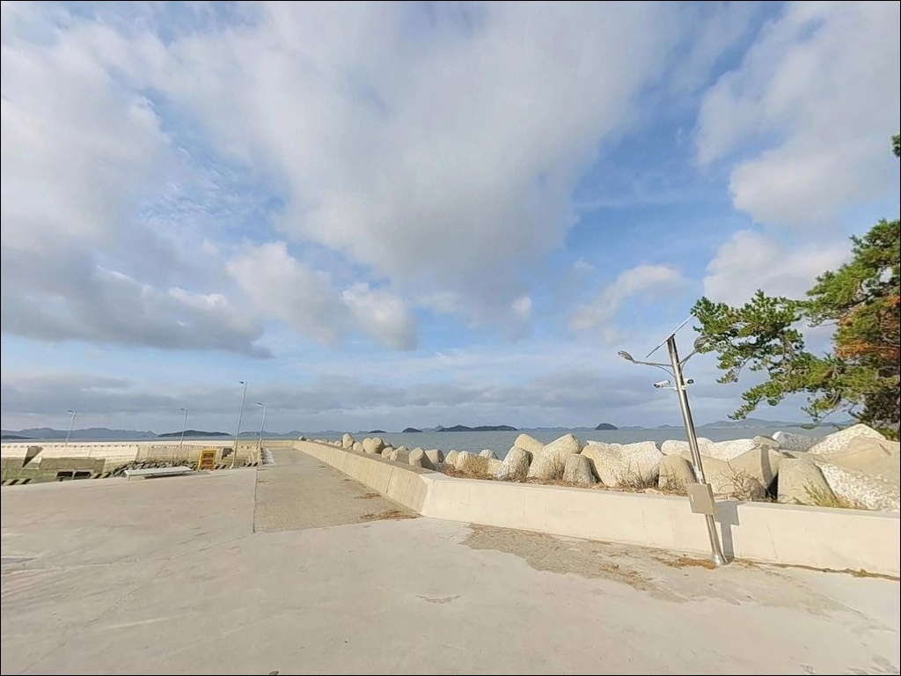
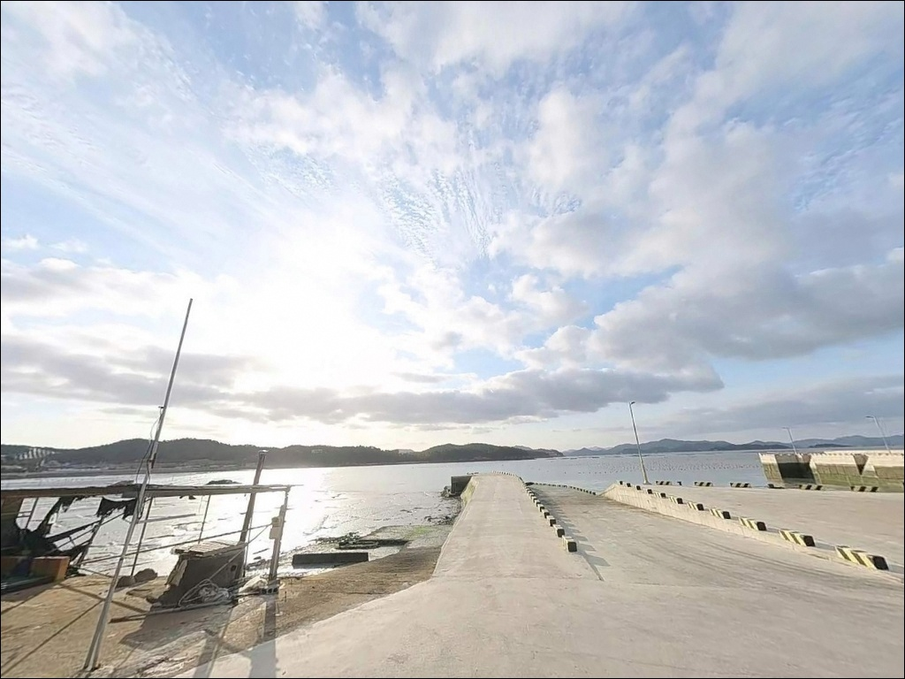
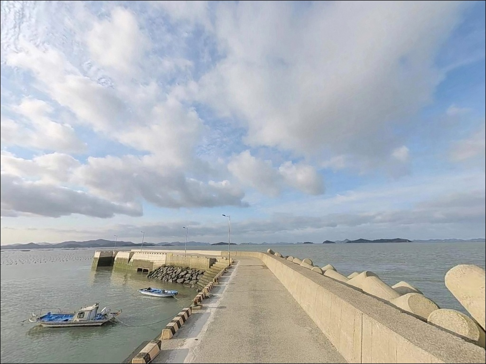
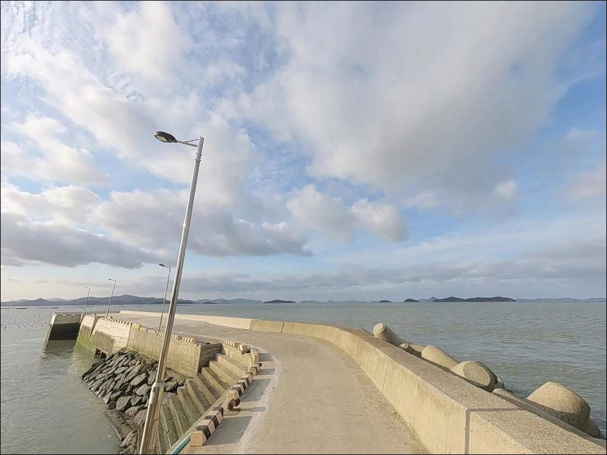
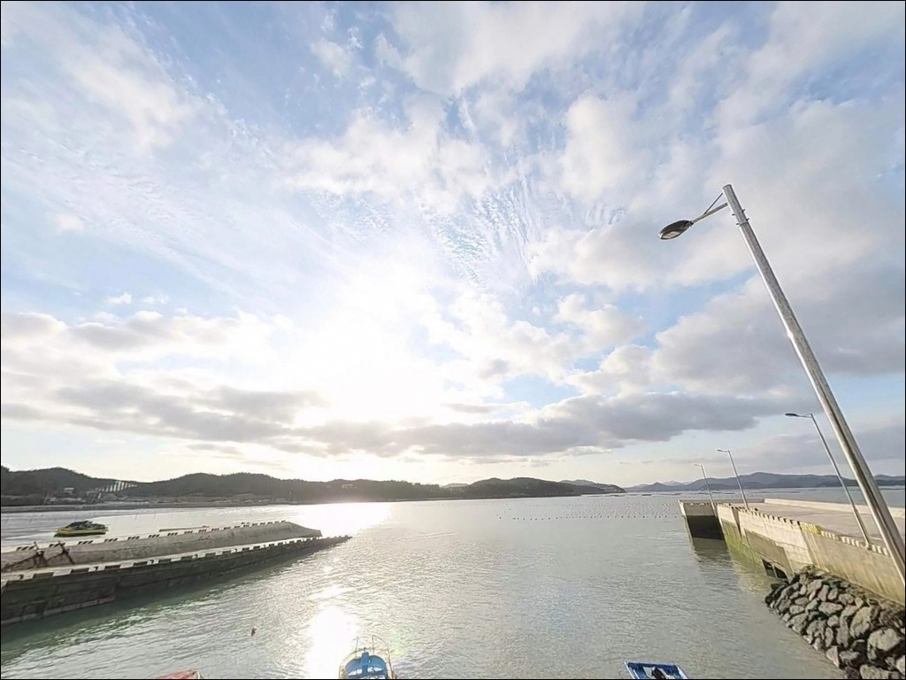
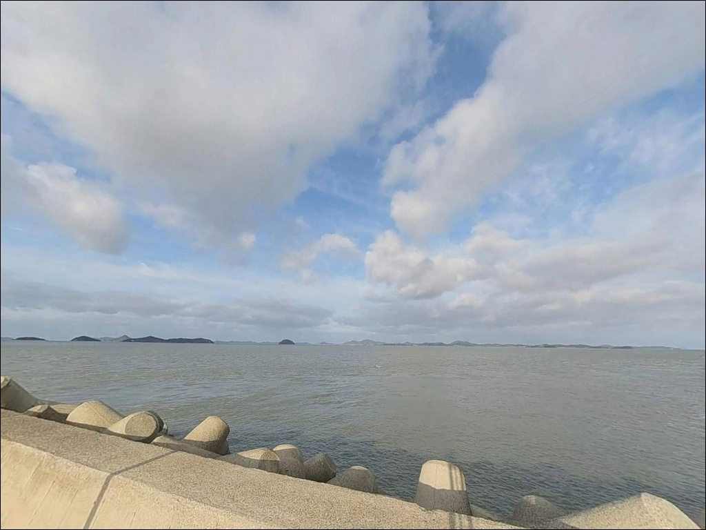
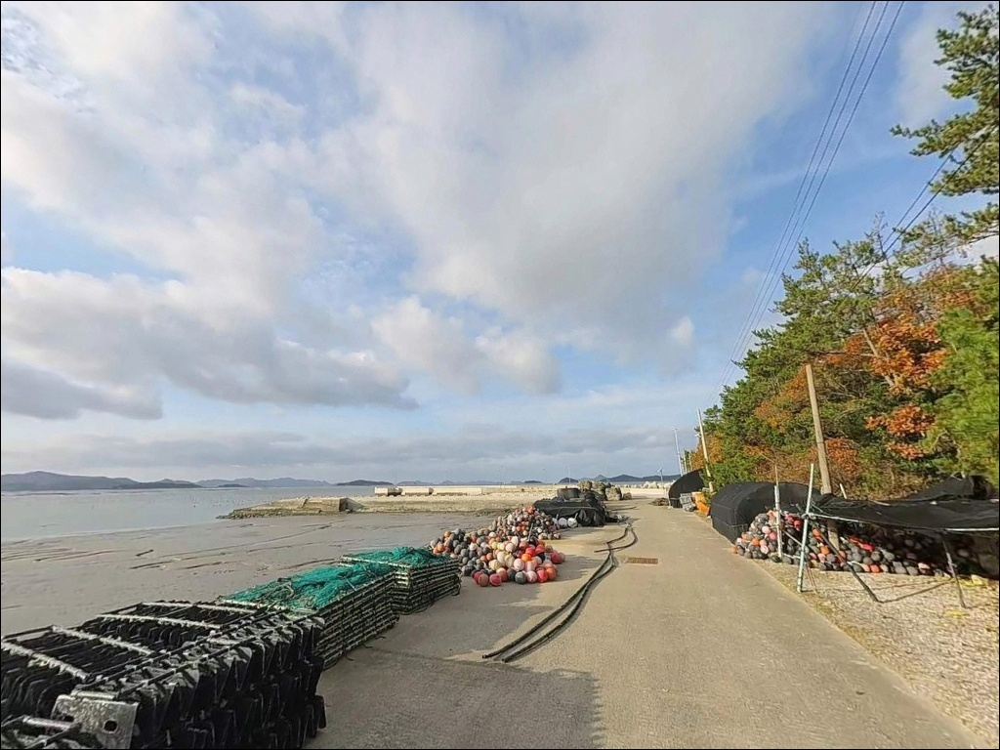

나리 북 선착장, 진도 전남 진도군 풍경이 깊은 여운을 남기는 차박, 낚시 해안
이 페이지에는 광고(제휴 링크 포함)가 있으며, 광고 링크를 통해 구매하면 운영자가 판매 수익 또는 수수료를 받을 수 있습니다. 포인트 사진: 카카오맵 스카이뷰·로드뷰. 이 페이지의 지도·사진 이미지는 카카오맵의 실제 서비스 이미지와 다를 수 있습니다.


포인트 안내
나리 북 선착장
전남 진도군 군내면 나리 398-25
나리 북 선착장은 물때를 맞추지 않으면
낚시 자리에 앉기도 전에
철수 결정을 내려야 하는 포인트입니다.
명량해협 수로 영향권에 위치한 이곳은
사리 전후 유속이 극도로 빨라져
채비 컨트롤이 불가능해지는 수준까지
조류가 세지는 구조입니다.
진도 극북단 군내면 나리 마을 끝자락에
자리한 이 선착장은
온라인 낚시 기록이 많지 않은
조용한 포인트입니다.
대신 나리 방파제, 군내방조제와
같은 해안선을 공유하는 구조여서
인근 권역 낚시 패턴을 그대로 적용할 수 있는
지형적 조건을 갖추고 있습니다.
이 글은 나리 북 선착장의
진입 여건, 지형 기반 낚시 조건,
물때별 공략 기준에 집중합니다.
조황 단정과 시설 보장은
이 글의 범위에 포함되지 않습니다.

1. 진입 동선과 포인트 접근성
나리 마을은 진도 북단 끝마을로,
803번 지방도를 통해 접근하는 구조입니다.
간선도로까지는 큰 어려움이 없으나
마을 진입 이후 선착장 방면 도로는
폭이 좁은 농어촌 수준으로
대형 SUV나 캠핑카라면
출발 전 위성지도 확인이 필요합니다.
선착장 내부는 소규모 계류 공간 구조로
회차 여유가 넉넉하지 않은 편입니다.
방파제 입구 인근 공터나
해안 도로변 갓길이
주차 후보로 활용되는 형태이며,
어선 동선과 겹치지 않는 자리를
먼저 확인하는 것이 순서입니다.
도로 종점형 마을 특성상
진입 후 후진 진출이 필요한 구간도
생길 수 있습니다.
중형 이하 차량은 비교적 수월하게
접근할 수 있는 편이지만,
캠핑 장비를 가득 실은
대형 차량이라면
진입 전 차로 폭 점검이 먼저입니다.

2. 차박 환경과 야간 체류 여건
나리 북 선착장은 낚시 거점 중심으로
활용하기에 적합한 구조이며,
차박을 메인 목적으로 삼기에는
주차 공간이 제한적인 편입니다.
선착장 바로 앞보다는
진입로 인근 공터 쪽이
야간 체류 여건이 나은 편입니다.
민가가 가까운 소규모 어촌 마을 특성상
야간 통행이 완전히 사라지지는 않으며,
프라이버시 확보 수준은
중간 정도로 보는 편이 현실적입니다.
가로등 밀도가 낮은 구조이므로
개인 조명 장비는 반드시 준비해야 합니다.
헤드랜턴과 여분 배터리를
기본 장비로 챙기는 것이 맞습니다.
명량해협과 가까운 구조상
바람 영향을 받는 날씨에는
차량 흔들림이 있을 수 있습니다.
낚시를 마치고 짧게 쉬어가는
거점형 체류라면 나쁘지 않지만,
하룻밤 장기 체류 목적이라면
군내방조제 쪽 대안을
함께 염두에 두는 것이 좋습니다.


3. 주변 편의시설 및 인프라 현황
나리 북 선착장 반경 3km 이내에서
편의점이나 식당을 기대하기는 어렵습니다.
군내면 끝마을 특성상
완전 자급 체제로 진입하는 것이
현실적인 준비 방식입니다.
식수, 얼음, 낚시 소품, 연료 모두
출발 전에 채워야 합니다.
반경 10km권으로 이동하면
진도대교 방면 녹진 지구 일대에
생활 인프라를 기대할 수 있습니다.
진도 북단 출조라면
녹진 방면에서 필요한 준비를 마치고
나리 방면으로 이동하는 동선이
가장 효율적입니다.
군내보건지소가 약 2~3km 거리에
위치하는 것으로 알려져 있으나,
응급 상황이라면 진도읍 방면으로
이동해야 하는 거리가 생깁니다.
출발 전 비상약품과 수분 준비는
반드시 챙겨야 할 기본 항목입니다.

4. 방문 전 반드시 챙겨야 할 준비사항
나리 북 선착장 방문에서 가장 먼저
확인할 것은 물때입니다.
명량해협 수로 영향권이라는 위치 특성상
사리 전후에는 유속이 극도로 빨라져
원투낚시 봉돌도 버티지 못하고
흘러버리는 수준이 됩니다.
바다타임에서 군내면 기준 물때를 확인하고
조금~중간 물때를 기준으로
출발 시각을 결정하는 것이 기본입니다.
기상 변화가 빠른 진도 북단 해역 특성상
당일 아침 해상 예보를 한 번 더 확인하는 것이
포인트 낭비를 막는 조건입니다.
채비 손실 가능성이 높은 지형이므로
여분 채비는 넉넉하게 준비하는 편이 좋습니다.
선착장 어선 동선과 계류 어구에
접촉하지 않는 자리 선정도
기본 매너입니다.
야간 낚시라면 구명조끼와
헤드랜턴 착용은 선택이 아닙니다.
명량해협 인근은 파도가 없어도
유속 변화로 인한 돌발 상황이
생길 수 있는 해역이므로,
조류가 강한 구간에서는
난간이나 안전 장비를
반드시 확보해야 합니다.

5. 명량해협 조류가 낚시를 바꾸는 구간
나리 북 선착장의 가장 큰 지형 특성은
명량해협 수로와의 거리입니다.
진도 극북단이라는 위치 자체가
서해와 남해가 교차하는 수로의
북쪽 입구부에 해당하는 구조입니다.
이 수로는 사리 때 조류 속도가
상당한 수준으로 빨라지는 구간으로 알려져 있어,
물때 선택이 조과의 전부를 결정하는
포인트라 할 수 있습니다.
선착장 주변 수심은 내항 쪽으로
완만한 구조이며,
방파제 끝단 방향으로는
수심 변화 구간이 형성되는 편입니다.
바닥은 갯벌과 돌이 섞인 구조로 추정되며,
수로 방향에 따라
조류 급변 지점이 형성되는 구간이
낚시 자리로 주목할 만합니다.
조류가 완만해지는 조금~중간 물때에는
채비 컨트롤 여유가 생기고,
들물 타임에 방파제 방향으로
어종이 유입되는 패턴이 진도 북부
해안선 전반에서 확인되는 구조입니다.
정조 전후를 제대로 활용하면
원투낚시와 찌낚시 모두
운용이 가능한 조건이 갖춰집니다.
출조 전에 나리 권역 최신 조황을
꼭 검색해 보시기 바랍니다.


6. 이 포인트에 어울리는 낚시 스타일
조류가 완만해지는 시간대에
가장 먼저 시도할 방식은
원투낚시입니다.
조류가 살아 있는 들물 초입에
방파제 방향으로 채비를 멀리 던지면
조류가 만들어내는 먹이 포집대를
바닥에서 탐색하는 방식이 됩니다.
진도 북부 해안선 전반에서
감성돔, 붕장어, 도다리, 숭어가
원투낚시 대상어로 올라오는
패턴이 확인됩니다.
찌낚시는 선착장 안쪽이나
조류가 꺾이는 구간에서
시도해볼 만합니다.
정조 타이밍에 내항 수면이
잔잔해지면 찌 운용이 수월해지고,
진도 북부 해안선에서
감성돔 찌낚시 조과가
보고되는 구간과 같은 해안선을
공유하는 위치입니다.
루어낚시도 조류 변화 구간에서
운용할 수 있는 방식입니다.
조류가 강한 시간대는 피하고
조금 전후 또는 정조 직전에
농어나 볼락을 대상으로
소형 루어를 운용하면
방파제 끝단 주변 구간에서
탐색 범위를 넓힐 수 있습니다.
여름 이후에는 민어가 올라오는
진도 북부 해안선 패턴과도
이어지는 위치입니다.

7. 대안 포인트와 플랜 B 동선
나리 북 선착장 조류가 너무 강하거나
주차 여건이 여의치 않을 때는
같은 해안선의 나리 방파제가
첫 번째 대안입니다.
구조가 더 명확하고
외항 공략이 가능한 형태여서
나리 북 선착장과 묶어
이동 탐색하는 동선으로
함께 활용할 수 있습니다.
군내방조제는 직선형 구조로
원투낚시에 유리한 편이며,
나리 북 선착장보다 넓은
주차 공간을 기대할 수 있습니다.
차박 공간이 부족할 때
대체 거점으로 고려하기에
가장 가까운 위치입니다.
진도 북부 해안선을 따라
더 이동하면 벽파항이 있습니다.
감성돔, 숭어, 우럭, 노래미 등
낚시 기록이 다수 확인되는 곳으로
나리 북 선착장 조황이
기대에 못 미칠 경우
우선 검토할 수 있는 대안 포인트입니다.
전두항 방파제도 규모 있는 포인트로
진도 북부 출조 동선에 함께 포함할 수 있습니다.

물때만 맞추면
나리 북 선착장이 달라 보입니다
진도 북단 해안선을 조용히 탐색하려는
낚시인이라면 나리 북 선착장은
충분히 들러볼 만한 지점입니다.
온라인 기록이 많지 않다는 것은
경쟁이 적다는 의미이기도 하고,
직접 발품을 팔아 자리를 파악해야 한다는
조건이기도 합니다.
원투낚시, 찌낚시, 루어낚시를
조류 타이밍에 맞춰 운용할 수 있다면
이 포인트의 구조는 잘 맞는 편입니다.
반면 물때 계산 없이
사리 전후에 찾아간다면
어떤 채비를 써도
조류를 버티지 못하는 상황을
마주하게 됩니다.
진도 북단 끝마을이라는 위치상
편의시설 없이 진입해야 하므로
자급 준비, 물때 확인, 진입로 점검,
이 세 가지를 갖추고 간다면
기억에 남는 출조가 될 수 있습니다.
나리 방파제, 군내방조제와 묶어
하루 동선을 짜고,
차 안에서 하룻밤 머물며
들물 타이밍을 노리는 계획이라면
진도 북부 해안선은
충분히 값어치 있는 루트입니다.